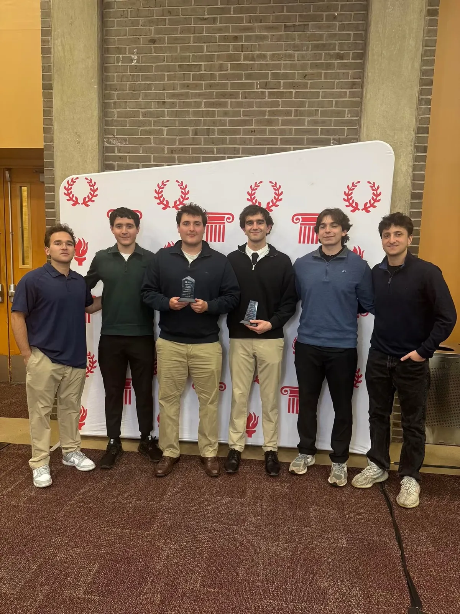
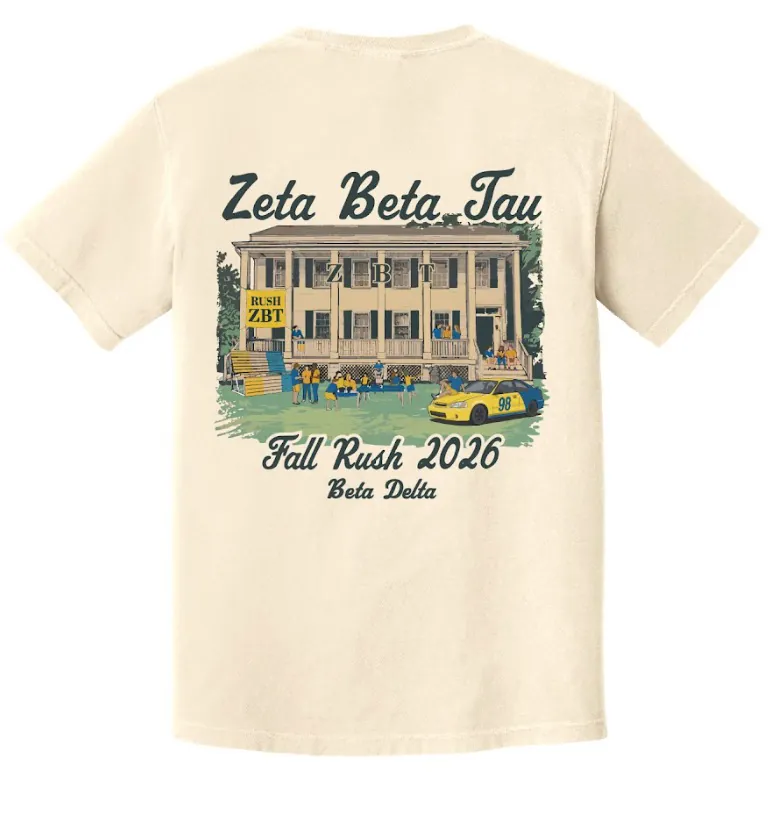
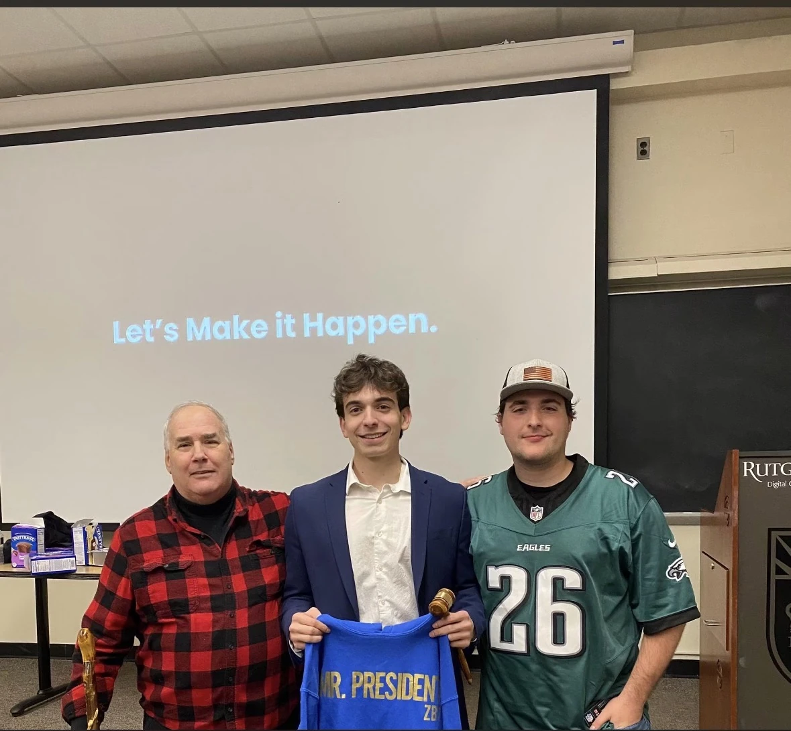
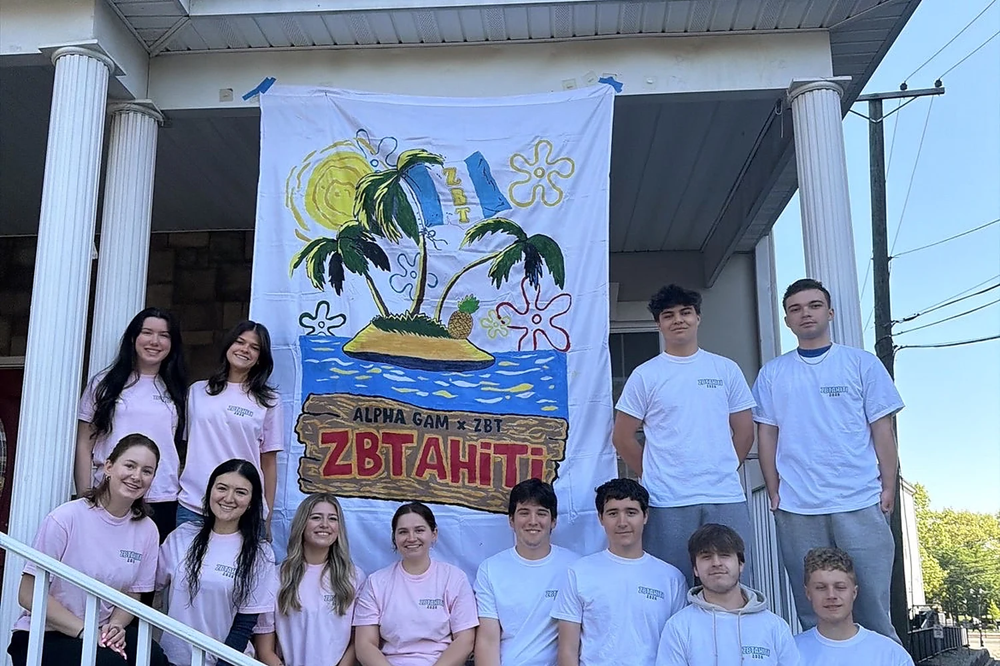

Updates for the Beta Delta community
Alumni News
Awards, athletics, recruitment, philanthropy and housing updates from the undergraduate chapter.
Latest Stories
What alumni should know
Rutgers Greek Life recognition
Ryan Hopp and George Economides receive major awards.
Keller SportsA championship and undefeated seasons
Softball and football add to the chapter’s recent momentum.
Chapter GrowthRecord recruitment and national recognition
Two record cycles and the Meissner Award.
Alumni & LeadershipThree presidents, one chapter story
Leadership continuity across generations.
PhilanthropyZBT Tahiti 2026
AGD wins a field of seven teams.
106 College AvenueA new home after the 2023 fire
The chapter enters a defining new era.

Ryan Hopp named President of the Year
Beta Delta was represented strongly at Rutgers’ Greek Life awards. Ryan Hopp received President of the Year, while George Economides received the Pillar Award for outstanding contribution to Greek Life.
The recognition reflects the chapter’s growing campus involvement and the work of leaders who helped guide Beta Delta through a period of expansion.
Championship success and two undefeated regular seasons
Beta Delta won the 2024 Rutgers intramural softball championship. In the following year, the chapter completed undefeated regular seasons in both football at 4–0 and softball at 3–0.
Hahns Hairston now leads Keller participation as the chapter’s Keller Chairman.


Record recruitment and the Meissner Award
Beta Delta reported record recruitment in both 2025 and 2026, expanding the chapter while creating more leadership opportunities for younger members.
Zeta Beta Tau recognized that progress with the 2025 Edwin B. Meissner Award for Most Improved Chapter. The Fall 2026 recruitment campaign now places 106 College Avenue at the center of the chapter’s next era.
Explore Fall 2026 RecruitmentThree presidents, one continuing chapter story
Keith Brauer, Michael Galari and Ryan Hopp represent different periods of Beta Delta leadership and the continuity between alumni, advisors and today’s undergraduate chapter.
The photograph reflects the way institutional knowledge moves forward when former presidents remain involved with the members leading the chapter today.


Alpha Gamma Delta wins the 2026 competition
The 2026 field included two Alpha Gamma Delta teams, two Zeta Tau Alpha teams, Phi Mu, Delta Gamma and Alpha Chi Omega.
The event brought organizations together through team competition, banners and fundraising while continuing one of Beta Delta’s signature philanthropy traditions.
See the Philanthropy PageFrom the 2023 fire to a new chapter home
After the chapter’s previous house was severely damaged by fire in December 2023, undergraduates, alumni and advisors worked toward a stable housing future.
106 College Avenue now gives Beta Delta a visible home in the center of campus and a platform for recruitment, brotherhood, alumni engagement and future traditions.
Read the Full House Story